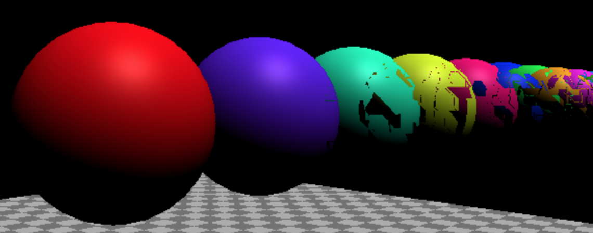
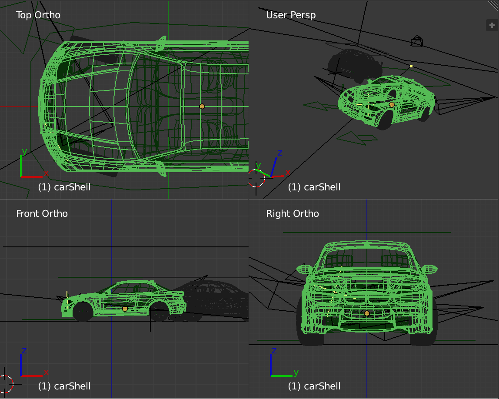

Cameras
本文是有关 Three.js 的系列文章中的一篇。 第一篇文章是关于基础知识。 如果您还没有读过，您可能想从这里开始。
让我们谈谈 Three.js 中的相机。我们在第一篇文章中介绍了其中的一些内容，但我们将在这里更详细地介绍它。
Three.js 中最常见的相机，也是我们迄今为止一直使用的相机是
PerspectiveCamera。它提供了 3D 视图，其中远处的事物出现
比近距离的物体小。
PerspectiveCamera 定义了一个平截头体。 截头锥体是一个实心金字塔形状，
尖端被切断。
固体的名称是指例如立方体、圆锥体、球体、圆柱体、
和平截头体都是不同种类固体的名称。
我只是指出这一点，因为我多年来都不知道。有些书或页面会提到 视锥体，我的眼睛会变得呆滞。了解它是一种固体的名称 shape 使这些描述突然变得更有意义 😅
A PerspectiveCamera 基于 4 个属性定义其截锥体。 near 定义了
截锥体的前面开始。 far 定义它的结束位置。 fov，视野，定义
通过计算正确的高度得到平截头体的正面和背面有多高
距相机 near 单位的指定视野。 aspect 定义了如何
截头体的前面和后面都很宽。截锥体的宽度就是高度
乘以方面。

让我们使用上一篇文章中具有地面的场景 平面、球体和立方体并进行制作，以便我们可以调整相机的设置。
为此，我们将为 MinMaxGUIHelper 和 near 设置创建 far ，以便 far
始终大于 near。它将具有 lil-gui 的 min 和 max 属性
会调整。调整后，它们将设置我们指定的 2 个属性。
class MinMaxGUIHelper {
constructor(obj, minProp, maxProp, minDif) {
this.obj = obj;
this.minProp = minProp;
this.maxProp = maxProp;
this.minDif = minDif;
}
get min() {
return this.obj[this.minProp];
}
set min(v) {
this.obj[this.minProp] = v;
this.obj[this.maxProp] = Math.max(this.obj[this.maxProp], v + this.minDif);
}
get max() {
return this.obj[this.maxProp];
}
set max(v) {
this.obj[this.maxProp] = v;
this.min = this.min; // this will call the min setter
}
}
现在我们可以像这样设置我们的 GUI
function updateCamera() {
camera.updateProjectionMatrix();
}
const gui = new GUI();
gui.add(camera, 'fov', 1, 180).onChange(updateCamera);
const minMaxGUIHelper = new MinMaxGUIHelper(camera, 'near', 'far', 0.1);
gui.add(minMaxGUIHelper, 'min', 0.1, 50, 0.1).name('near').onChange(updateCamera);
gui.add(minMaxGUIHelper, 'max', 0.1, 50, 0.1).name('far').onChange(updateCamera);
任何时候相机的设置发生更改，我们都需要调用相机的
updateProjectionMatrix 函数
所以我们创建了一个名为 updateCamera add 的函数，将其传递给 lil-gui 以在情况发生变化时调用它。
您可以调整这些值并查看它们是如何工作的。请注意，我们没有使 aspect 可设置，因为
它是根据窗口的大小获取的，因此如果您想调整宽高比，请打开示例
在新窗口中，然后调整窗口大小。
不过，我认为它有点难以看到，所以让我们更改示例，使其有 2 个摄像头。 一个将显示我们在上面看到的场景，另一个将显示另一台摄像机看着 第一个摄像机正在绘制并显示该摄像机的平截头体的场景。
为此，我们可以使用 Three.js 的 scissor 函数。 让我们使用剪刀函数
将其更改为并排绘制2个带有2个摄像机的场景__首先让我们使用一些HTML和CSS来定义2个并排元素。这也将
帮助我们处理事件，以便两个摄像机可以轻松拥有自己的OrbitControls.
<body> <canvas id="c"></canvas> + <div class="split"> + <div id="view1" tabindex="1"></div> + <div id="view2" tabindex="2"></div> + </div> </body>
以及将使这两个视图并排显示在顶部的CSS 画布
.split {
position: absolute;
left: 0;
top: 0;
width: 100%;
height: 100%;
display: flex;
}
.split>div {
width: 100%;
height: 100%;
}
然后在我们的代码中添加一个CameraHelper。 CameraHelper 为 Camera
const cameraHelper = new THREE.CameraHelper(camera); ... scene.add(cameraHelper);
现在让我们查看 2 个视图elements.
const view1Elem = document.querySelector('#view1');
const view2Elem = document.querySelector('#view2');
我们将设置现有的OrbitControls来响应第一个
仅查看元素。
-const controls = new OrbitControls(camera, canvas); +const controls = new OrbitControls(camera, view1Elem);
让我们制作第二个 PerspectiveCamera 和第二个 OrbitControls。
第二个 OrbitControls 与第二个摄像头绑定并获取输入
从第二个视图元素.
const camera2 = new THREE.PerspectiveCamera( 60, // fov 2, // aspect 0.1, // near 500, // far ); camera2.position.set(40, 10, 30); camera2.lookAt(0, 5, 0); const controls2 = new OrbitControls(camera2, view2Elem); controls2.target.set(0, 5, 0); controls2.update();
最后我们需要从每个视图的角度渲染场景 相机使用剪刀函数仅渲染到画布的一部分。
这里是一个给定元素将计算矩形的函数 与画布重叠的元素。然后它将设置剪刀 并将视口设置为该矩形并返回该尺寸的纵横比。
function setScissorForElement(elem) {
const canvasRect = canvas.getBoundingClientRect();
const elemRect = elem.getBoundingClientRect();
// compute a canvas relative rectangle
const right = Math.min(elemRect.right, canvasRect.right) - canvasRect.left;
const left = Math.max(0, elemRect.left - canvasRect.left);
const bottom = Math.min(elemRect.bottom, canvasRect.bottom) - canvasRect.top;
const top = Math.max(0, elemRect.top - canvasRect.top);
const width = Math.min(canvasRect.width, right - left);
const height = Math.min(canvasRect.height, bottom - top);
// setup the scissor to only render to that part of the canvas
const positiveYUpBottom = canvasRect.height - bottom;
renderer.setScissor(left, positiveYUpBottom, width, height);
renderer.setViewport(left, positiveYUpBottom, width, height);
// return the aspect
return width / height;
}
现在我们可以使用该函数在 render 函数中绘制场景两次
function render() {
- if (resizeRendererToDisplaySize(renderer)) {
- const canvas = renderer.domElement;
- camera.aspect = canvas.clientWidth / canvas.clientHeight;
- camera.updateProjectionMatrix();
- }
+ resizeRendererToDisplaySize(renderer);
+
+ // turn on the scissor
+ renderer.setScissorTest(true);
+
+ // render the original view
+ {
+ const aspect = setScissorForElement(view1Elem);
+
+ // adjust the camera for this aspect
+ camera.aspect = aspect;
+ camera.updateProjectionMatrix();
+ cameraHelper.update();
+
+ // don't draw the camera helper in the original view
+ cameraHelper.visible = false;
+
+ scene.background.set(0x000000);
+
+ // render
+ renderer.render(scene, camera);
+ }
+
+ // render from the 2nd camera
+ {
+ const aspect = setScissorForElement(view2Elem);
+
+ // adjust the camera for this aspect
+ camera2.aspect = aspect;
+ camera2.updateProjectionMatrix();
+
+ // draw the camera helper in the 2nd view
+ cameraHelper.visible = true;
+
+ scene.background.set(0x000040);
+
+ renderer.render(scene, camera2);
+ }
- renderer.render(scene, camera);
requestAnimationFrame(render);
}
requestAnimationFrame(render);
}
上面的代码在渲染时设置场景的背景颜色 第二个视图为深蓝色，只是为了更容易区分这两个视图。
我们还可以删除 updateCamera 代码，因为我们正在更新所有内容
在 render 函数中。
-function updateCamera() {
- camera.updateProjectionMatrix();
-}
const gui = new GUI();
-gui.add(camera, 'fov', 1, 180).onChange(updateCamera);
+gui.add(camera, 'fov', 1, 180);
const minMaxGUIHelper = new MinMaxGUIHelper(camera, 'near', 'far', 0.1);
-gui.add(minMaxGUIHelper, 'min', 0.1, 50, 0.1).name('near').onChange(updateCamera);
-gui.add(minMaxGUIHelper, 'max', 0.1, 50, 0.1).name('far').onChange(updateCamera);
+gui.add(minMaxGUIHelper, 'min', 0.1, 50, 0.1).name('near');
+gui.add(minMaxGUIHelper, 'max', 0.1, 50, 0.1).name('far');
现在您可以使用一个视图来查看另一个视图的截锥体。
在左侧您可以看到原始视图，在右侧您可以看到
请参阅左侧显示相机视锥体的视图。当你调整时
near, far, fov 用鼠标移动相机可以看到
只有右侧所示的视锥体内的内容才会出现在场景中
左边.
将near调整到20左右，您将轻松看到物体的正面
消失，因为它们不再位于截锥体中。将far调整到35左右以下
你会开始看到地平面消失，因为它不再位于
平截头体.
这提出了问题，为什么不将 near 设置为 0.0000000001 和 far
到 10000000000000 或类似的值，这样你就可以看到所有内容？
原因是你的 GPU 只能有这么多的精度来决定是否有东西
在其他东西的前面或后面。该精度分布在
near 和 far。更糟糕的是，默认情况下接近相机的精度是详细的
远离相机的精度较差。单位以 near 开头
并在接近 far.
时慢慢扩展__从上面的示例开始，让我们更改代码以在 row.
{
const sphereRadius = 3;
const sphereWidthDivisions = 32;
const sphereHeightDivisions = 16;
const sphereGeo = new THREE.SphereGeometry(sphereRadius, sphereWidthDivisions, sphereHeightDivisions);
const numSpheres = 20;
for (let i = 0; i < numSpheres; ++i) {
const sphereMat = new THREE.MeshPhongMaterial();
sphereMat.color.setHSL(i * .73, 1, 0.5);
const mesh = new THREE.Mesh(sphereGeo, sphereMat);
mesh.position.set(-sphereRadius - 1, sphereRadius + 2, i * sphereRadius * -2.2);
scene.add(mesh);
}
}
让我们将near设置为0.00001
const fov = 45; const aspect = 2; // the canvas default -const near = 0.1; +const near = 0.00001; const far = 100; const camera = new THREE.PerspectiveCamera(fov, aspect, near, far);
我们还需要稍微调整一下GUI代码，以便在编辑值时允许0.00001
-gui.add(minMaxGUIHelper, 'min', 0.1, 50, 0.1).name('near').onChange(updateCamera);
+gui.add(minMaxGUIHelper, 'min', 0.00001, 50, 0.00001).name('near').onChange(updateCamera);
您认为会怎样会发生吗？
这是一个 z 战斗 的示例，其中您计算机上的 GPU 没有 足够的精度来确定哪些像素在前面，哪些像素在后面。
以防万一问题没有在您的计算机上显示，这是我在我的计算机上看到的

一个解决方案是告诉 Three.js 使用不同的方法来计算哪个
像素在前，哪些在后。我们可以通过启用来做到这一点
logarithmicDepthBuffer 当我们创建 WebGLRenderer
-const renderer = new THREE.WebGLRenderer({antialias: true, canvas});
+const renderer = new THREE.WebGLRenderer({
+ antialias: true,
+ canvas,
+ logarithmicDepthBuffer: true,
+});
时，它可能会起作用
如果这不能解决您的问题，那么您就会遇到一个原因 你不能总是使用这个解决方案。这个原因是因为只有某些 GPU 支持它。截至 2018 年 9 月，几乎没有移动设备支持此功能 解决方案，而大多数台式机都是这样做的。
不选择此解决方案的另一个原因是它可能会慢得多 比标准解决方案。
即使使用此解决方案，分辨率仍然有限。使 near 均匀
更小或 far 更大，您最终会遇到同样的问题。
这意味着您应该始终努力选择 near
和适合您的用例的 far 设置。设置near离相机尽可能远
尽你所能，不让事情消失。将 far 设置为靠近相机
尽你所能，不让事情消失。如果你想画一个巨人
场景并显示某人脸部的特写，以便您可以看到他们的睫毛
在背景中您可以看到 50 公里外的山脉
在远处，那么你需要找到其他创造性的解决方案
也许我们稍后再过去。现在，请注意您应该小心
根据您的需求选择适当的 near 和 far 值。
第二个最常见的相机是 OrthographicCamera。而不是
指定一个平截头体，它指定一个带有设置 left、right 的盒子
top、bottom、near 和 far。因为它投影的是一个盒子
没有远见。
让我们将上面的 2 个视图示例更改为使用 OrthographicCamera
在第一个视图中。
首先让我们设置一个 OrthographicCamera.
const left = -1; const right = 1; const top = 1; const bottom = -1; const near = 5; const far = 50; const camera = new THREE.OrthographicCamera(left, right, top, bottom, near, far); camera.zoom = 0.2;
我们设置 left 并bottom 到 -1 和 right 和 top 到 1。这将使
一个 2 个单位宽、2 个单位高的盒子，但我们要调整 left 和 top
根据我们要绘制的矩形的长宽比。我们将使用 zoom 属性
以便轻松调整相机实际显示的单位数。
让我们为 zoom
const gui = new GUI(); +gui.add(camera, 'zoom', 0.01, 1, 0.01).listen();
添加一个 GUI 设置，对 listen 的调用告诉 lil-gui 监视更改。这是因为
OrbitControls 还可以控制缩放。例如，滚轮打开
鼠标将通过 OrbitControls 进行缩放。
最后我们只需要更改渲染左侧的部分
侧更新OrthographicCamera.
{
const aspect = setScissorForElement(view1Elem);
// update the camera for this aspect
- camera.aspect = aspect;
+ camera.left = -aspect;
+ camera.right = aspect;
camera.updateProjectionMatrix();
cameraHelper.update();
// don't draw the camera helper in the original view
cameraHelper.visible = false;
scene.background.set(0x000000);
renderer.render(scene, camera);
}
现在你可以看到一个 OrthographicCamera 正在工作。
如果使用 Three.js，则最常使用 OrthographicCamera
绘制 2D 事物。您可以决定需要多少台相机
来展示。例如，如果您希望画布的一个像素匹配
相机中的一个单位，你可以这样做
将原点放在中心并有1个像素= 1个three.js单位 类似的东西
camera.left = -canvas.width / 2; camera.right = canvas.width / 2; camera.top = canvas.height / 2; camera.bottom = -canvas.height / 2; camera.near = -1; camera.far = 1; camera.zoom = 1;
或者如果我们希望原点位于左上角，就像 2D 画布我们可以使用这个
camera.left = 0; camera.right = canvas.width; camera.top = 0; camera.bottom = canvas.height; camera.near = -1; camera.far = 1; camera.zoom = 1;
在这种情况下左上角将是 0,0 就像 2D 画布
让我们尝试一下！首先让我们设置相机
const left = 0; const right = 300; // default canvas size const top = 0; const bottom = 150; // default canvas size const near = -1; const far = 1; const camera = new THREE.OrthographicCamera(left, right, top, bottom, near, far); camera.zoom = 1;
然后让我们加载6个纹理并制作6个平面，每个纹理一个。
我们将每个平面设置为 THREE.Object3D 的父级，以使其易于偏移
平面，因此其中心似乎位于左上角。
如果您在本地运行，您还需要进行设置。 您可能还想了解使用纹理.
const loader = new THREE.TextureLoader();
const textures = [
loader.load('resources/images/flower-1.jpg'),
loader.load('resources/images/flower-2.jpg'),
loader.load('resources/images/flower-3.jpg'),
loader.load('resources/images/flower-4.jpg'),
loader.load('resources/images/flower-5.jpg'),
loader.load('resources/images/flower-6.jpg'),
];
const planeSize = 256;
const planeGeo = new THREE.PlaneGeometry(planeSize, planeSize);
const planes = textures.map((texture) => {
const planePivot = new THREE.Object3D();
scene.add(planePivot);
texture.magFilter = THREE.NearestFilter;
const planeMat = new THREE.MeshBasicMaterial({
map: texture,
side: THREE.DoubleSide,
});
const mesh = new THREE.Mesh(planeGeo, planeMat);
planePivot.add(mesh);
// move plane so top left corner is origin
mesh.position.set(planeSize / 2, planeSize / 2, 0);
return planePivot;
});
并且如果画布的大小我们需要更新相机
function render() {
if (resizeRendererToDisplaySize(renderer)) {
camera.right = canvas.width;
camera.bottom = canvas.height;
camera.updateProjectionMatrix();
}
...
planes 是一个 THREE.Mesh 数组，每个平面一个。
让我们根据时间移动它们。
function render(time) {
time *= 0.001; // convert to seconds;
...
const distAcross = Math.max(20, canvas.width - planeSize);
const distDown = Math.max(20, canvas.height - planeSize);
// total distance to move across and back
const xRange = distAcross * 2;
const yRange = distDown * 2;
const speed = 180;
planes.forEach((plane, ndx) => {
// compute a unique time for each plane
const t = time * speed + ndx * 300;
// get a value between 0 and range
const xt = t % xRange;
const yt = t % yRange;
// set our position going forward if 0 to half of range
// and backward if half of range to range
const x = xt < distAcross ? xt : xRange - xt;
const y = yt < distDown ? yt : yRange - yt;
plane.position.set(x, y, 0);
});
renderer.render(scene, camera);
您可以看到图像从边缘的边缘完美地反弹像素 使用像素数学的画布就像 2D 画布一样
OrthographicCamera 的另一个常见用途是绘制
3D 建模的上、下、左、右、前、后视图
程序或游戏引擎的编辑器。

在上面的屏幕截图中，您可以看到 1 个视图是透视图，3 个视图是 正交视图。
这就是相机的基础知识。我们将介绍一些移动相机的常见方法 在其他文章中。现在让我们继续讨论阴影.